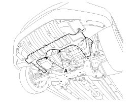
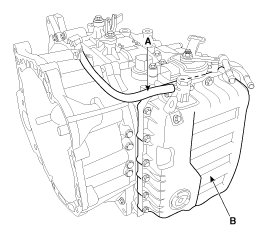
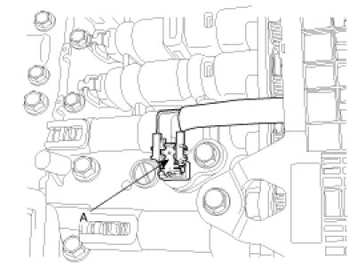
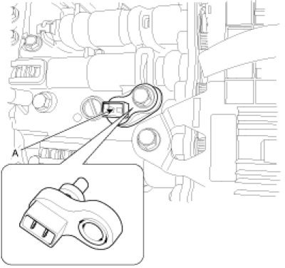
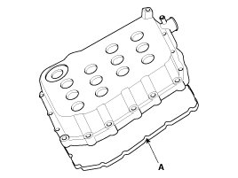

Transmission Temperature Sensor/Switch: Service and Repair
Inspection
1. Turn ignition switch OFF.
2. Disconnect the Solenoid valve connector.
3. Measure resistance between sensor signal terminal and sensor ground terminal.
4. Check that the resistance is within the specification.
Removal
1. Disconnect the negative (-) battery cable.
2. Remove the air cleaner assembly and air duct.
3. Remove the under cover (A).
Tightening torque:
6.9 - 10.8 N.m (0.7 - 1.1 kgf.m, 5.1 - 8.0 lb-ft) )

4. Replace new gasket and the plug after draining the automatic transaxle fluid by removing the drain plug.
5. Remove the air breather hose (A).
6. Remove the valve body cover (B).
Tightening torque:
13.7 - 15.7 N.m (1.4 - 1.6 kgf.m, 10.8 - 11.6 lb-ft)

7. Disconnect the oil temperature sensor connector (A).

8. Remove the oil temperature sensor (A) after removing a bolt.
Tightening torque:
9.8 - 11.8 N.m (1.0 - 1.2 kgf.m, 7.2 - 8.7 lb-ft)

Installation
1. Installation is the reverse of removal.
NOTE:
After replacement or reinstallation procedure of the valve body assembly, must perform procedures below.
- Adding Automatic Transaxle Fluid(ATF).
- Perform Transaxle Control Module(TCM) learning after replacing the valve body to prevent slow transaxle response, jerky acceleration and jerky startup.
- Use new valve body gasket (A).
